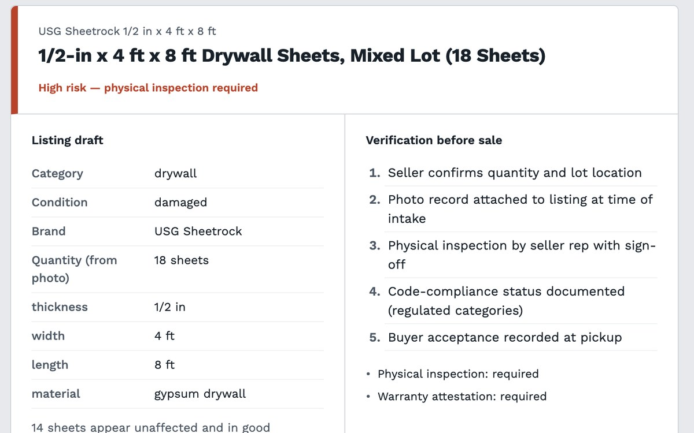

ReStock Verify
Python, FastAPI, Claude API, Docker, Google Cloud Run
- A vision model reads product photos and SKUs and returns a structured listing. Pydantic validates the output, and a rule-based risk tier decides which verification steps each listing needs.
- A labeled evaluation set (6 of 6 on category and condition, 1.0 spec recall) exposed a weakness with mixed-condition lots, and a prompt change fixed it. The project has tests, linting, and CI.
- It runs on Cloud Run with an intake page, keeps the API key in Secret Manager, and scales to zero when idle.